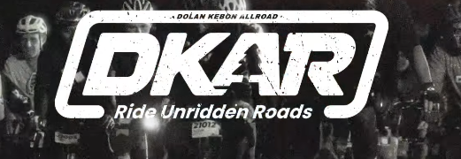

Live event directory
Every event, one clear view.
Pilih event yang ingin Anda ikuti. Lihat rute, peserta, checkpoint, dan progres perjalanan secara live dari browser.
Pilih event yang ingin Anda ikuti. Lihat rute, peserta, checkpoint, dan progres perjalanan secara live dari browser.
